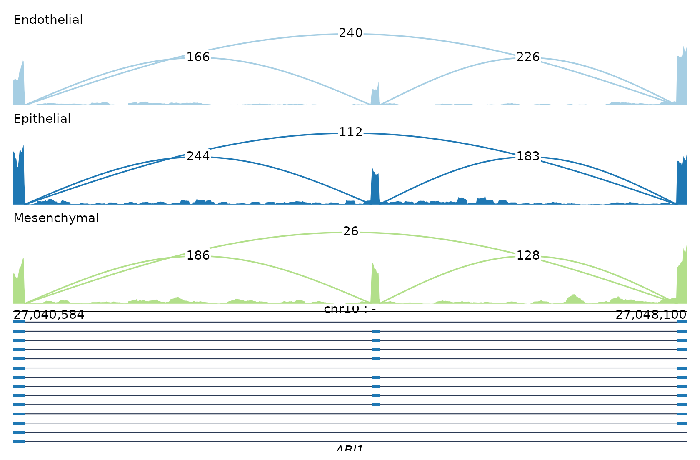
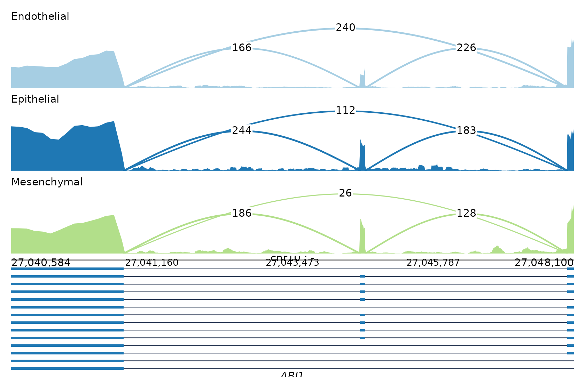
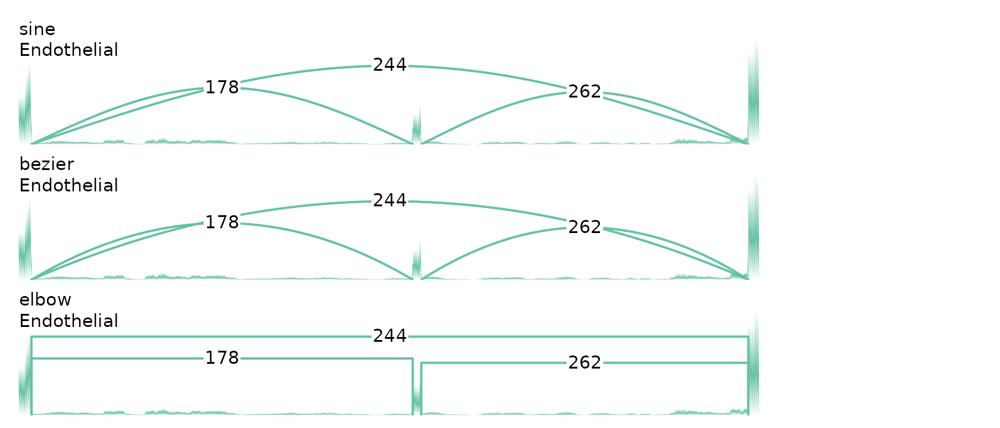
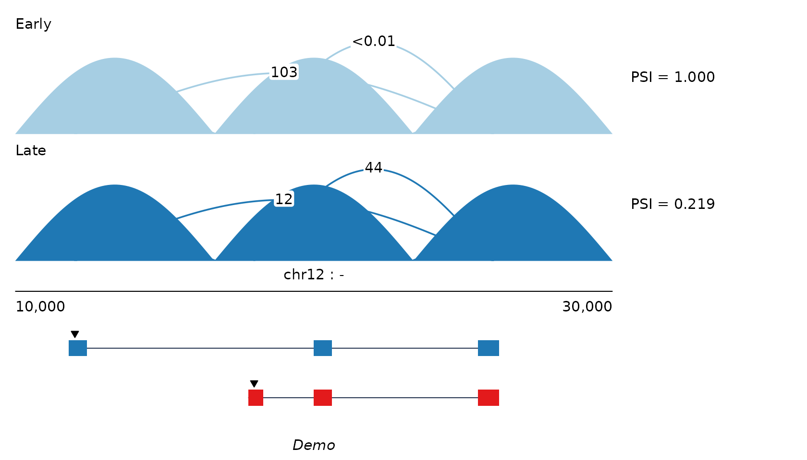

The shape of the package
omakase separates counting from drawing. Every
reader returns the same object, a sashimi_data, and every
plotting function takes one. That is the whole design:
BAM / CRAM ─┐
rMATS events ┤
5'-tag BED ├─→ sashimi_data ─→ plot_sashimi()
STAR SJ.tab ┤ (tidy tables) sashimi_track()
tidy tables ─┘ sashimi_annotation()Because the intermediate is data rather than pixels, a slow pass over
a large BAM happens once, and re-plotting is instant. And because the
plotting functions return ggplot and patchwork
objects, a figure can be adjusted after it is drawn rather than by
re-running everything with different flags.
From alignments
The package ships six ENCODE libraries over the human ABI1 locus, two from each of three cell types.
bams <- system.file("extdata", "samples.tsv", package = "omakase")
gtf <- system.file("extdata", "annotation.gtf", package = "omakase")
read_manifest(bams)
#> sample
#> 1 ENCLB024ZZZ
#> 2 ENCLB025ZZZ
#> 3 ENCLB271TJH
#> 4 ENCLB459IUG
#> 5 ENCLB008ZZZ
#> 6 ENCLB009ZZZ
#> path
#> 1 /home/runner/work/_temp/Library/omakase/extdata/bams/ENCFF088HTJ.bam
#> 2 /home/runner/work/_temp/Library/omakase/extdata/bams/ENCFF450AIU.bam
#> 3 /home/runner/work/_temp/Library/omakase/extdata/bams/ENCFF841RJE.bam
#> 4 /home/runner/work/_temp/Library/omakase/extdata/bams/ENCFF756PUW.bam
#> 5 /home/runner/work/_temp/Library/omakase/extdata/bams/ENCFF871MPV.bam
#> 6 /home/runner/work/_temp/Library/omakase/extdata/bams/ENCFF603IAA.bam
#> cell_type group label
#> 1 Endothelial Endothelial ENCLB024ZZZ
#> 2 Endothelial Endothelial ENCLB025ZZZ
#> 3 Epithelial Epithelial ENCLB271TJH
#> 4 Epithelial Epithelial ENCLB459IUG
#> 5 Mesenchymal Mesenchymal ENCLB008ZZZ
#> 6 Mesenchymal Mesenchymal ENCLB009ZZZThe manifest is a plain TSV: identifier, path, then any number of
metadata columns. Column three groups the samples here, and
sashimi_from_bam() reads coverage and junctions over a
region in one pass.
sd <- sashimi_from_bam(
bams,
region = "chr10:27040584-27048100",
annotation = gtf,
min_count = 10
)
#> Warning: replacing previous import 'S4Arrays::makeNindexFromArrayViewport' by
#> 'DelayedArray::makeNindexFromArrayViewport' when loading 'SummarizedExperiment'
sd
#> <sashimi_data>: 1 locus, 3 groups
#> • tracks: 5016 rows
#> • junctions: 18 rows
#> • models: 288 rows
#> loci: ABI1The object is six tidy tables. Nothing is hidden:
head(sd$junctions, 4)
#> locus_id group sample x0 x1 strand
#> 1 chr10:27,040,584-27,048,100 Mesenchymal ENCLB008ZZZ 27040712 27044584 *
#> 2 chr10:27,040,584-27,048,100 Mesenchymal ENCLB009ZZZ 27040712 27044584 *
#> 3 chr10:27,040,584-27,048,100 Endothelial ENCLB024ZZZ 27040712 27044584 *
#> 4 chr10:27,040,584-27,048,100 Endothelial ENCLB025ZZZ 27040712 27044584 *
#> count role label
#> 1 230 <NA> <NA>
#> 2 141 <NA> <NA>
#> 3 153 <NA> <NA>
#> 4 178 <NA> <NA>Drawing it aggregates the two libraries of each cell type into one panel:
plot_sashimi(sd, aggregate = "mean", arc_label_format = "count")
Compressing introns
Most of a gene is intron, so a linear axis spends most of its width
on empty sequence. shrink = TRUE draws each intron at a
reduced length while leaving exons at scale 1, and the axis still
reports true genomic coordinates.
plot_sashimi(sd, aggregate = "mean", arc_label_format = "count",
shrink = TRUE, arc_width_rule = "log", arc_width = 0.3)
The map itself is an object you can inspect and apply by hand:
introns <- data.frame(start = c(27041000, 27044000), end = c(27043500, 27047500))
m <- intron_map(introns, 27040584, 27048100)
m
#> <omakase intron map> method "power", 2 introns, 7516 bp drawn as 2058 (27%)
compress_coords(c(27040584, 27044000, 27048100), m)
#> [1] 27040584 27041739 27042642It is exactly invertible, which is what lets the axis labels stay honest:
expand_coords(compress_coords(27044000, m), m)
#> [1] 27044000Normalising
Neither ggsashimi nor rmats2sashimiplot normalises, so a deeply sequenced library looks like a highly expressed gene. omakase makes the choice explicit:
sd_cpm <- normalize_tracks(sd, "cpm",
library_sizes = c(ENCLB024ZZZ = 3.1e7,
ENCLB025ZZZ = 2.8e7,
ENCLB271TJH = 3.4e7,
ENCLB459IUG = 2.9e7,
ENCLB008ZZZ = 3.3e7,
ENCLB009ZZZ = 3.0e7))
sd_cpm$meta$normalize_factors
#> ENCLB024ZZZ ENCLB025ZZZ ENCLB271TJH ENCLB459IUG ENCLB008ZZZ ENCLB009ZZZ
#> 31 28 34 29 33 30"size_factor" uses DESeq2’s median-of-ratios estimator
and needs no library sizes at all.
Choosing the arc
Six geometries are available. The sine arc is the default; the x-spline is what ggsashimi draws, the Bezier is MISO’s.
library(patchwork)
wrap_plots(lapply(c("sine", "bezier", "elbow"), function(s) {
sashimi_track(sd, group = "Endothelial", arc_shape = s,
arc_label_format = "count") +
ggplot2::ggtitle(s)
}), ncol = 1)
Building the object yourself
If your counts come from somewhere omakase does not read, build the tables directly. This is also how the package draws start-site activity figures, where an “arc” is a pointer from a start site to the body of the transcript rather than a counted junction.
pos <- seq(10000, 30000, length.out = 201)
wave <- function(scale) abs(sin(seq(0, 3 * pi, length.out = 201))) * scale
sd2 <- sashimi_data(
loci = data.frame(locus_id = "g1", gene_name = "Demo", chrom = "chr12",
strand = "-", win_lo = 10000, win_hi = 30000,
main_apex = 12000, alt_apex = 18000),
tracks = do.call(rbind, lapply(c("Early", "Late"), function(g) {
data.frame(locus_id = "g1", group = g, pos = pos,
value = wave(c(Early = 40, Late = 14)[[g]]))
})),
junctions = data.frame(
locus_id = "g1", group = rep(c("Early", "Late"), each = 2),
x0 = c(12000, 18000), x1 = 26000,
count = c(103.01, 0.004, 12.4, 44.2),
role = c("main", "alt")
),
models = rbind(
data.frame(locus_id = "g1", tx_id = "main", role = "main",
start = c(11800, 20000, 25500), end = c(12400, 20600, 26200)),
data.frame(locus_id = "g1", tx_id = "alt", role = "alt",
start = c(17800, 20000, 25500), end = c(18300, 20600, 26200))
)
)
sd2 <- compute_psi(sd2, main = "main", alt = "alt")
plot_sashimi(sd2)
Note the arc labels: 0.004 prints as
<0.01 rather than rounding to 0.
format_activity() picks its precision from the magnitude of
each value, so a small non-zero number is never shown as absent.
Where to go next
-
vignette("consequence")— classifying and drawing what a start-site switch does to the transcript. -
?plot_sashimi— the full argument surface. -
?sashimi_data— the data contract, if you are writing your own reader.